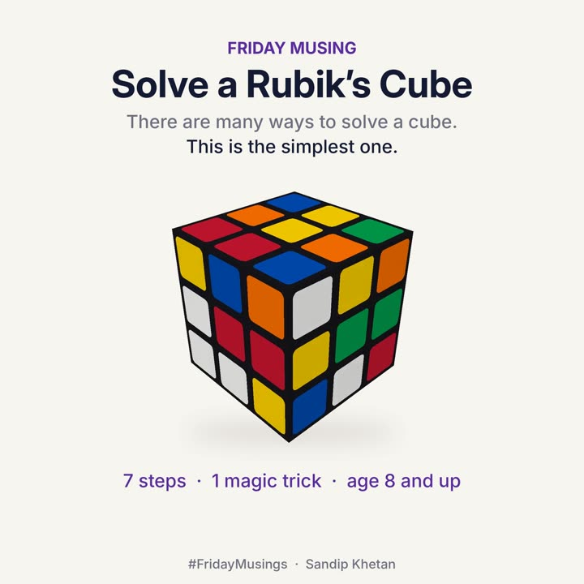

#FridayMusings · Sandip Khetan
Every ledger is its own scramble.
I made a Rubik’s Cube tutorial for 8-year-olds: one method, seven steps, in order. Watch it with a controller’s eyes and it reads like a close checklist. The cube below solves itself, one step at a time; tap anywhere for the soundtrack, or switch to step by step. The close tracker beside it signs off one workstream per step in red pencil, and every recipe reopens finished work on purpose before handing it back.

The kid version is at the endVideo, 1 min 42 s, age 8 and up. It’s the reason this page exists.
Example cube. Yours may look different.
drag to turn
♪ Tap anywhere for the soundtrack
Close tracker
Finished work intact
Intermission · Are you watching closely?
Review notes
Five things the cube tells a finance team
- ✓1Layers, in order.You can’t do step 5 before step 2. A close runs the same way: cash, subledgers, intercompany, then the top-side work. Skipping ahead feels fast and ends in a reopened period.
- ✓2Protect what’s already solved.Every recipe lifts finished work on purpose and puts it back. That’s change management: when you touch a control, re-test the ones next to it. Watch the close tracker: signed-off workstreams flip to re-testing while a recipe runs, then sign off again.
- ✓3Trust the mess in the middle.Step 7 makes the finished white side look broken, then fixes it. Every controller who has cleared a suspense account knows that week. Finish the recipe; don’t stop at the ugly part.
- ✓4A recipe beats talent.The four-turn magic trick does the work in step 2, sits inside step 4, and comes back on the bottom in step 7. A good control is a recipe a new hire can run, not a gift you hope stays with the company.
- ✓5Repeatable beats optimal.A computer can solve any position in 20 moves or fewer. People use a longer method they can repeat and explain. Optimal is for computers; repeatable is for teams, and for the auditors who have to follow them.
Take it to your close
Which layers does your close already protect?
One line per step, plus the intermission. Tick what is true at your company. Nothing leaves this page; your ticks stay in this browser.
The gift
Now hand the phone to someone who is 8.
The original tutorial: one method, seven steps, a robot hand on every turn, and an original soundtrack. The words say where the FRONT squares go.
Golden rule: keep yellow on top the whole time.
The magic trick: . Say it out loud!
The magic trick: . Say it out loud!